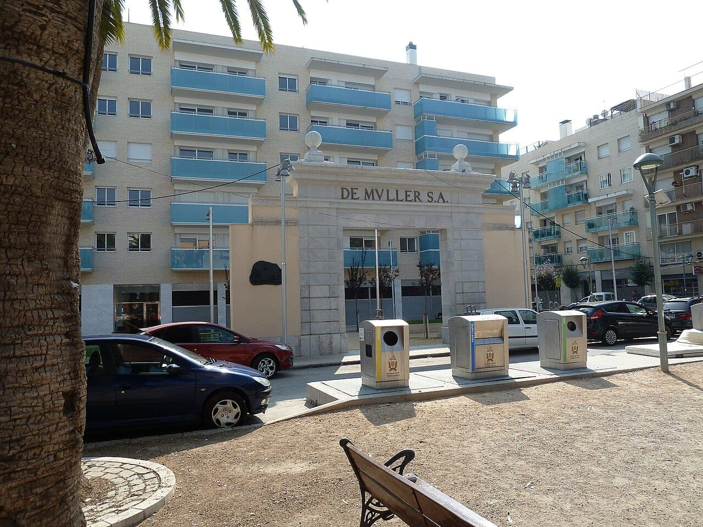
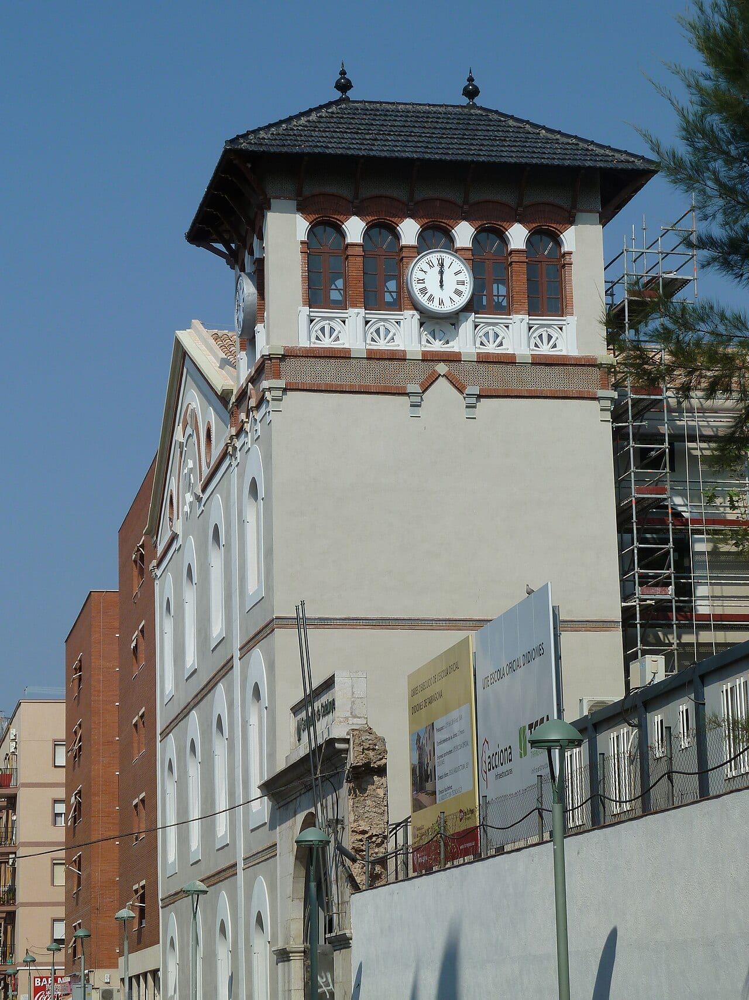
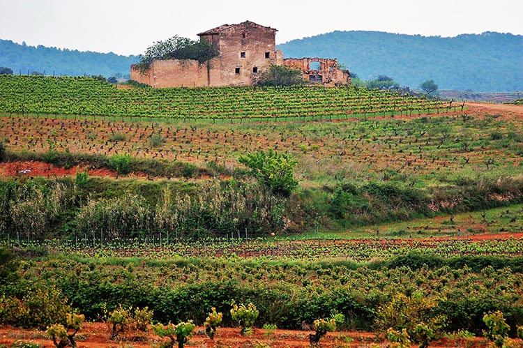

Lo único que queda es la puerta
Bajando hacia el puerto, en el carrer Reial de Tarragona, hay un portal de piedra con las letras DE MVLLER S. A. grabadas en oro. Detrás no hay bodega: hay un bloque de pisos con balcones turquesa. El almacén desapareció y el portal se quedó, plantado en la acera como un arco de triunfo sin ejército. Poca gente que pasa por delante sabe que de aquella dirección salía el vino que se consagraba en los altares de medio mundo.
No es casualidad que estuviera ahí. El carrer Reial, pegado al puerto, concentraba los almacenes de vino que exportaban a toda Europa, y de aquellas naves salía el Tarragona Classic que conquistó el mercado británico, del que ya hablamos en el artículo del vino de Tarragona. En esa misma calle, en 1851, un alsaciano montó una casa de vinos que acabaría teniendo un cliente insólito: el Vaticano.
Por qué el vino de misa es un producto técnico, no devoto
Aquí conviene entender qué se le pide a un vino de misa, porque explica todo lo demás. El Código de Derecho Canónico lo despacha en una línea: el vino debe ser natural, del fruto de la vid y no corrompido, sin aditivos ni conservantes. Nada de colorantes, nada de azúcares añadidos, nada de correcciones. Lo demás —la graduación, el color, el dulzor— queda a criterio de los obispos de cada país.
Parece poco y es muchísimo. Significa que el vino tiene que viajar a países cálidos, aguantar meses en sacristías sin nevera y seguir siendo bebible, sin ninguna de las ayudas que usa la industria. La respuesta histórica a ese problema fue el vino generoso, dulce y de graduación alta: exactamente lo que el Camp de Tarragona llevaba siglos haciendo. La casa obtuvo el certificado eclesiástico de pureza litúrgica en 1883 y, cinco años después, se presentó al concurso vaticano.
En 1888 ganó la medalla de oro y el nombramiento de proveedor oficial. Desde entonces y durante seis pontificados, hasta Juan XXIII, el vino de las misas papales salió de Tarragona. Como lo resume Eduard Martorell, el gerente actual: «De Muller fue el primero y el último en tener la oficialidad de proveedor oficial del Vaticano».

El portal, hoy: piedra, letras doradas y contenedores de basura delante. Lo que había detrás se derribó. Foto: Deosringas · Wikimedia Commons (CC BY-SA 3.0).
Dos casas del mismo barrio viviendo de la Iglesia
Hay una coincidencia que dice mucho de la Tarragona de entonces. A pocos minutos a pie de aquel portal, en la plaça dels Infants, unos monjes cartujos expulsados de Francia montaron en 1903 la destilería donde elaboraron Chartreuse durante 86 años. El mismo barrio portuario abastecía a la vez los altares del mundo y el licor más secreto de Europa. No por devoción: porque aquí había uva, alcohol, almacenes y un puerto que salía a todas partes.
La casa hoyUna masía del siglo XV y un mapa de reparto improbable
La familia Martorell compró la casa en 1995 y a principios de 1996 trasladó la actividad al Mas de Valls, una masía del siglo XV en Reus, con 150 hectáreas de viña alrededor. Tienen una segunda bodega, el Mas de les Pusses, en el Molar, con 34 hectáreas más, y trabajan bajo tres denominaciones: Tarragona, Terra Alta y Priorat. En 1999 sumaron el vermut, que es como entran en la otra gran tradición líquida de la ciudad: la del vermut de Reus.
El mapa · Dónde acaba el vino que sale de Reus
La casa factura alrededor de cinco millones de euros y tiene más de cuarenta trabajadores fijos, pero lo interesante es el destino: entre el 98% y el 99% del vino de misa que elaboran se vende por el canal Iglesia, y sale hacia China, Papúa Nueva Guinea, Vietnam, Mongolia, el Tíbet, Senegal, Colombia, Ecuador, México y casi toda Europa. Dicho de otro modo: en parroquias donde no sabrían situar Tarragona en un mapa, lo que se consagra lleva uva del Camp.
Qué beber de una casa que no bebe casi nadie
Aquí está la paradoja que nos interesa como asociación: una bodega de Tarragona con casi dos siglos de oficio y catálogo litúrgico tiene, en cambio, muy poca presencia en las mesas de aquí. Y lo que vale la pena no es el vino de misa: son los generosos. El rancio seco y el moscatel añejo pertenecen a una familia de vinos —los licorosos del Camp— que fuera del territorio casi nadie sabe ya cómo beber, y que son históricamente nuestros.
Un rancio seco pide almendra tostada, queso curado o una anchoa; el moscatel añejo va con los postres de almendra, que es exactamente lo que se pone en la mesa por Tots Sants junto a los panellets. Nada de esto es nostalgia: es una categoría de vino que el Camp sabe hacer mejor que casi nadie y que está esperando que alguien la vuelva a pedir.
Y nosotros tambiénUna puerta que vale la pena mirar al pasar
La próxima vez que bajes por el carrer Reial, para un segundo delante del portal. Es un resto industrial en medio de la ciudad nueva, sin placa que lo explique y con los contenedores delante, y cuenta una historia que no está en ninguna guía: la de una ciudad que durante un siglo exportó vino dulce al mundo entero y acabó poniéndolo en el altar. Si algún día organizamos una visita a la bodega de Reus, esta es de las que no me perdería.
Fuentes consultadas: El Español (reportaje a Eduard Martorell, abril de 2026), Vinissimus, De Muller, Codi de Dret Canònic (cànon 924), DO Tarragona, Museu d'Història de Tarragona, Vinetur. Imágenes: Deosringas y Pere prlpz, vía Wikimedia Commons (CC BY-SA 3.0); archivo propio.
Newsletter
¿Quieres recibir la próxima crónica antes que nadie?
Crónicas de los restaurantes visitados, vinos recomendados y novedades del Camp de Tarragona. Cada quince días, sin ruido.
Sin spam · Date de baja cuando quieras.
Más historias líquidas del Camp

CuriosidadesChartreuse de Tarragona · 86 años destilando un secreto
La otra casa del mismo barrio portuario que vivió de la Iglesia: los cartujos destilando junto al puerto entre 1903 y 1989.
Leer →
VinosEl vino de Tarragona · Las DO del territorio
De dónde viene el Tarragona Clàssic que conquistó Inglaterra y por qué los licorosos siguen siendo los grandes olvidados.
Leer →